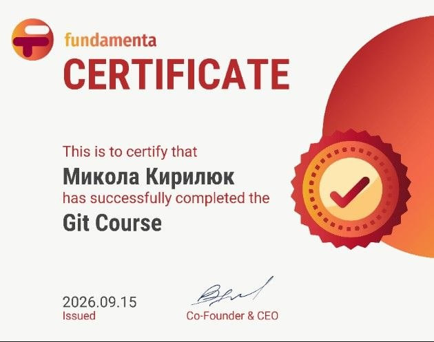

Git — це найпопулярніша у світі розподілена система контролю версій. Вона дозволяє фіксувати зміни у файлах коду, відкочуватися до попередніх версій проекту та вести розробку паралельно за допомогою гілок.
Оскільки система розподілена, кожен розробник має на своєму ПК локальну копію всієї історії проекту, що гарантує високу швидкість та повну незалежність від сервера.
Нижче наведено список із 10 ключових команд для ініціалізації проекту та керування версіями:
| Команда | Що вона виконує |
|---|---|
1git init | Створює новий порожній локальний репозиторій у поточній папці. |
2git status | Показує стан файлів: які змінено, які додано до індексу розробником. |
3git add . | Додає абсолютно всі нові або змінені файли поточної папки до індексу збереження. |
4git commit -m "опис" | Робить фіксацію (знімок) заіндексованих змін із коментарем. |
5git branch -M main | Примусово перейменовує поточну головну гілку репозиторію на "main". |
6git remote add origin URL | Прив'язує локальну папку до віддаленого репозиторію на GitHub. |
7git push -u origin main | Відправляє локальні комміти у хмару на GitHub і запам'ятовує гілку. |
8git clone URL | Клонує (завантажує) готовий проект з GitHub у нову папку на ПК. |
9git log | Виводить детальну історію всіх коммітів проекту з їхніми авторами та ID. |
10git pull | Підтягує та автоматично зливає останні зміни з сервера у твій робочий код. |
Документ, що підтверджує успішне освоєння базового курсу Git.
